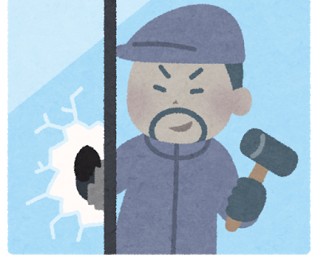
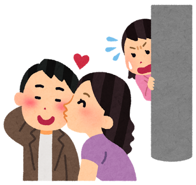

コンプライアンスとは？
コンプライアンス【compliance】とは英語で「命令・要求に従うこと」という意味です。
日本では「企業が法律や企業倫理を遵守すること」という意味で使われています。
企業の『社会的な倫理』や『法律』、『内規』 など、基本的なルールに従って活動する事であり「ビジネスコンプライアンス」とも言います。
近ごろ、会社・企業の不祥事に対して、社会の目が益々厳しくなってきています。
たとえ社員が1万人いる会社でも、たった１人の起こした不祥事で経営ができなくなる、会社の信用が地に堕ちて存続が難しくなる、そのような可能性はゼロではありません。
そういった危険性を予防するために、このコンプライアンスマニュアルがあります
難しい事ではなく
会社としては「会社の信用やブランドイメージを守るための対策」、
個人としては「悪いことをしなければいいんだ」という事です！
同時に
社内ルールも
その刑罰も含めて以下に記載しました
今後は
くれぐれも不祥事から会社を守り
自分自身の人生が守れるように
このマニュアルを理解し行動して下さい
日本の企業は欧米に比べて危機管理は10年以上遅れています。何かが有ってからでは遅い、遅いイコール企業の崩壊、消滅を意味する。 各自がマニュアルを確実に理解し実践して下さい。
① 金庫内の現金、領収書確認
必ず二人以上でレジ金、金庫内の領収書、両替金、出納帳を確認、足りない場合は速やかに上長に報告し、指示を仰ぐ。
金庫内の金銭の確認が実施されておらず、引継ぎ作業終了後に金庫内保管金が不足している事が発覚。責任の所在を擦り合う。結果、新任者の怠慢との理由で、新任者の責任となる。
② シフト確認
前任者とシフトの欠員理由を明確に確認し、早急に完成させる事。 シフトは店舗運営上「最も重要な書類」であり、チェックミスを防ぐ為にも走り書き、鉛筆記入は厳禁。
従業者の急な欠勤時、連絡先が不明なためシフト欠員が発生、お客様へ多大な御迷惑をお掛けし、クレームを頂き、社長が遠路より出向き直接対応するもお許しを頂けなかった。
③ カギの受け渡し
店舗キーの全本数確認、カギ使用者確認。 鍵所有担当者は必ず「所有表で管理」し、絶対に放置しないようにする。
④ 入金方法の理解
銀行の場所の確認と、入金方法の伝達、入金に行けるスタッフの確認をする事。
⑤ 従業員リスト、業者連絡先リストの確認
自宅、携帯の双方を記入したリスト(通常は金庫保管)を受け取る事。業者連絡リストで 緊急を要する警察署、消防署、ガス会社、電力会社、主要な地名等、地図上でも確認する事。
⑥ 全スタッフへの挨拶と連絡先の伝達
自分の連絡先と略歴を全従事者へ挨拶を兼ねて連絡し、今後の展望とスタッフの予定、要望を確認する。
新任店長から既存メンバーへの挨拶が全くなく、最初から信用を失い、その後、数ヶ月もやりにくい職場環境が続く。何名かの退社後、募集経費を掛け新人教育を実施、元のレベルに達するまで一年を要する。
⑦ 入店方法、退店方法の確認
店舗によって入退店の仕方が違う為、確実に覚える事。退店の仕方が解らず警報を発報した前例があり、深夜に多方面へ迷惑を掛ける結果となる。また暗証番号でのセキュリティー付帯店舗は専務へ番号変更の有無を確認し、指示があれば速やかにセキュリティー会社へ連絡の上変更し、必要最低限の従事者への連絡をする事。
退店方法の伝達不足により警備会社からAM4時に社長宅へ連絡が入る。その後、店舗にて直接対応を余儀なくされる。
⑧ ライフラインの基点と緊急時対応表の確認
水道、ガス、電気、電話は店舗運営を行う上でなくてはならない物。不都合が起きる事を予想し事前に緊急連絡先を店舗に提示しておかなければならない。新任時にはブレーカー、水道メーター、ガスの安全装置兼元栓の位置を必ず確認し、各電話番号は全て最初に把握する事。
夜ピーク中、公共工事の事故により市内の主幹水道管破裂が発生。その為に水道水が一切使用不可能になる。当時責任者不在により代行メイトによる運営中、代行メイトの判断によりコンビニエンスストアにあるミネラルウォーターを購入。トイレは一時的に使用不可能な旨をお客様に伝えし、ご理解を頂く。幸い短時間で事が済み無事終えるが、長時間の際には更に先をも考えなければならない(当時メイト代行の考えはポットの水を全席ではなくお客様のいらっしゃる指定席のみに置く、氷を溶かして水を確保)を考えていた。
電話機の故障により一日通して電話が鳴らず、故障に気が付くのが夜になって他店従業員より知らされる。当日のTO注文、宅配注文の受注率が極端に低く、明らかにお客様からの信頼を裏切ってしまった。数日後お客様サービスセンターにクレームの電話が入り、 「何度、電話を掛けてもお店のほうは不通?営業をしているのかも分らないこんな事ならば宅配など辞めてしまえ!」等の内容を言われてしまう。専務と責任者が直接お客様宅に出向き謝罪。
店舗周辺に異常がないか必ずチェック！絶対に現場をいじってはいけません！
◼︎ 起こりうる犯罪
【住居侵入罪】
3年以下の懲役又は10万円以下の罰金
① 店舗周辺の確認
店舗周辺に異常がないか確認しながら入店。特に通用口、店舗入り口の鍵周りは要注意。 いつもと様子が違えばその場から離れ、まず上司へ連絡し指示を仰ぐ。
② 食材の適正数と前日の指示事項の確認
当日の昼ピーク分の食材の確認と油交換、シフト欠員手配他、伝達事項の確認。
通用口の鍵が壊されている事に気付かず入店、「事件現場をいじるな」の鉄則に反し、警察から厳重注意を受ける。もしも賊が店内に潜んでいたら身の安全も確保出来ない可能性あり。(レジ内の現金42000円を盗まれ、犯人逮捕に至っていない)

身の安全の確保を！賊やチンピラに注意。
◼︎ 起こりうる犯罪
【強盗罪】
5年以上の有期懲役
① 帰宅方法
女性メイトは少しでも早い帰宅をする事、また22時以降の自転車での帰宅する従事者は、防犯ブザー等、緊急避難が可能なツールを所持する事を義務付ける。
② 安全の確保
深夜の退店者は駐車場等が遠方の場合、自分の車の位置を早めに店舗通用口近くに移動するなど、少しでも早く車に乗り込む事。 くれぐれも店舗周辺にて話し込んだりせず帰宅する事。
③ 訪問者の確認
従業員通用口は常時施錠を行う。深夜の従業員通用口からの来訪者はむやみにドアを開けず、店舗側へまわって貰う事。従事者の訪問は直前に電話連絡をし訪問をする事。
④ 現金の管理
店舗売上金等は絶対に持ち出さず金庫へ保管、金庫キーも特定の従事者が持つ事。
⑤ 終了確認
店舗の入り口ドアの施錠、ガスの元栓、電気のスイッチ、翌日の開店作業従事者への伝達メモ等の通常ラスト業務の再確認を確実に実施し、最後まで絶対に気を抜かない事。特に狙われやすいのが連休明けや日曜深夜の店舗に現金が多い時であり、細心の注意が必要。
深夜レギュラー2名が離れた駐車場の車まで歩いている時にチンピラ風の何人かに暴行を受け、金品の略奪に遭う。後日、犯人は別件では有るが逮捕される。
鍵は店長または、任命された人以外は管理してはいけません！
◼︎ 起こりうる犯罪
【住居侵入罪】
3年以下の懲役又は10万円以下の罰金
① 所持権限
鍵の保管は店長か店長から任命された鍵保管者のみが使用し、その他のスタッフは触ることも禁じます。
② 勤務中の義務
勤務中は鍵を体から離さず、常時持ち歩く事。
③ 鍵所持責任者の退職時
鍵の保管者が退社した時は鍵の交換か警報装置の暗証番号の変更をする事。
④ 紛失した場合
何らかの事情で鍵を紛失した時は、気付いた時点で即時鍵交換を実費にて実施。
平成23年8月19日、館林国道122号店にて責任者が鍵の保管者も保管場所も把握しておらず管理不足にて深夜賊進入。お盆の売上、両替金、小口現金等６日分が盗難に遭う。(警察から最も疑われたのは店長であり、管理能力に問題がある事から店長降格処分。犯人逮捕には至っていない)
現在は毎日入金しているので店舗に多額の現金を保管する事はありません
平成15年1月14日、太田末広店にてラスト作業終了後に店舗キーを、店舗外の隠し場所に設置して帰宅、翌日明らかに鍵を使って賊が侵入。売上金、両替金、小口現金等120万4570円盗難に遭う。(犯人逮捕には至っていない)
① 予防策1
最悪の状況を考えて従業員は必ず緊急連絡先(専務、店舗責任者、近隣店舗)を携帯電話等に登録し把握しておく。いかなる状況でも指示、連絡が出来る状態を作る。
② 予防策2
店舗責任者は、前日退店時に翌日の開店従事者を確認し、鍵の引継ぎ作業が行われているか確実にチェックすること。
③ 予防策3
鍵保持者が開店作業開始 10分前までに出勤しない場合、速やかに店長に連絡する。また明らかに 10時の開錠時間に間に合わない場合は緊急連絡先より事務所に連絡し、指示を乞う。
三条燕インター店にて、鍵を所持したレギュラーが寝坊。出社したメイトが電話をするが連絡とれず。責任者の電話番号も把握されてなく、各所に確認し、やっと責任者と連絡を付ける。その後、本人を起こし準備作業開始この時点で10時40分。パックライス等にて対応し、何とか11時の開店には間に合わせるも準備不足のため、お客様に多大なご迷惑をお掛けしてしまう。
食中毒が発生した場合の損害、2,695,000,000円。
◼︎ 起こりうる犯罪
【業務上過失致死傷罪】
5年以下の懲役若しくは禁錮又は100万円以下の罰金
① 管理チェック
-
衛生監査チェックシートは必ず月に一度は行い、結果を責任者が検証する。
賞味期限チェック表は、一日最低2回チェックし、当日期限の食材に関しては、必ずピックアップし厨房に貼り出す。
-
販売期限チェックシートは毎週チェックを行い、規定の期限を切る商品は販売禁止とする。
-
賞味期限管理シールは、必ず仕込み日、賞味期限日、商品名、担当者名を記入の上、全食材に添付し管理する。担当者名はフルネームで記入する。
-
温度チェック表は毎朝、夕方に必ずチェックを行い、異常温度発生の場合は時間をおき再計測する。再計測結果も異状が認められる場合は、すぐに店長に報告。
-
レギュラーは入社後半年以内に食品衛生責任者の資格を必ず取得する。
② 身嗜み
-
入店前には必ず身嗜みチェック表のチェック項目を第三者に確認してもらい、不適合箇所がある場合(爪、指輪、頭髪、制服の汚れなどの不衛生箇所がある場合)は入店する事は出来ない。
-
体調不良、切り傷、手荒れなどの場合は、適切な処置を行い調理担当から外す。
-
コロコロローラー、手洗い(爪ブラシ)、アルコール消毒は店舗外から店内に戻る時には 必ず遂行する。
③ 施設衛生
什器備品の洗浄不良(タッパー類は特にテープののり、貼り跡など)に注意し、乾燥保管 を義務付ける。開店作業、閉店作業時の清掃以外にも、デイリーの清掃スケジュールを立て遂行する。厨房内にホチキス、画鋲、シャープペンなど異物混入の恐れが考えられる物の持ち込み、セットは原則禁止。
1店舗で食中毒が発生した時の損害。
まず、発生店舗に保健所の立ち入り検査が行われ、7日間の営業停止。平均売上を20万と設定しても
7日間×20万円=140万円
その間の店舗食材のロス食材比率35%1日平均75000円とすれば
75000円×7日間=525000円
その後、この影響が全国に波及し、全店舗の調査が必要となれば、
(1400000円+525000円)×1400 店舗=2,695,000,000円
1週間で最低でもこれだけの損害が発生し、家賃や返済等も含めて考えれば、取り返しのつかない事態にまで発展する。個人の注意不足がここまで大きな問題に発展する可能性を秘めている。
東京エリアの店舗にて本部衛生監査が実施された結果、賞味期限切れの商品が確認される(ケチャップ、しめじ、ねぎ)。
本部規定により大きなペナルティーを科せられる事となる(衛生店舗評価D評価。食材値引き率停止、新規出店無期限停止)。
(株)スカイスクレイパー創業以来最大の汚点として社内共に記録として残る事件となりました。店舗評価D評価は指摘項目の改善が見られない場合は加盟解除となり、この時は壱番屋との加盟契約解消の危機に瀕した状態が数ヵ月継続。
担当店舗の店長は会社に大きな損害を与えた事に対して反省したそぶりは無く、管理改善も一向に進まない為、翌月解雇処分となる。
誤差が発生した場合は、必ず調査&報告。
◼︎ 起こりうる犯罪
【業務上横領罪】
10年以下の懲役
① レジ金チェック
レジ金チェックは毎日、開店時、15時、21時、ラスト時に行い必ずチェック表に誤差と担当者の名前を記入することとする。
② 責任の所在
開店時のチェックにて誤差が発生した場合は、前日の責任者の責任を前提として調査する。
③ 誤差発生時
レジ誤差が500円以上発生した場合は必ずレジ誤差報告書にて即日報告する。
④ 管理チェック
毎月、無作為に管理チェック表、レジ内、金庫内の金額チェックを行い、誤差が生じている 場合、該当店舗の責任者及び代行責任者は、原因を徹底究明し報告。その内容によって処分を行う。
事前通達無く金庫内と過去一ヶ月の伝票を専務、オーナー、補佐、責任者の立会いの下、調査。
金額が合わず問い詰めたところ、一時間後に意図的に抜き取った事を自白。警察へ通報後、家族から謝罪と過去に遡っての考えられる金額の全額弁償と責任者の解雇にて終了。
「金と女にだらしない社員の会社は続かない」を教訓に、もしもの時は告訴も有り得ます。
ガスの元栓、タバコの始末等必ず確認！
◼︎ 起こりうる犯罪
【業務上過失致死傷罪】
5年以下の懲役若しくは禁錮又は100万円以下の罰金
① 確認事項
-
ガスの元栓は確実に閉めてある事を閉店時に必ず確認する事。
-
休憩室の灰皿、店外灰皿は吸い殻を水で濡らして処分したい退店する。
② 火災発生時の対処
-
お客様の身の安全を確保するために、店外への避難誘導を最優先する。その後従業員も避難。
-
初期消火活動（各店の消化器の位置は必ず把握しておく。）
-
消防署に連絡をする。
熊谷新島店にて休憩室のタバコの不始末による火災が発生。 店舗全焼と隣接するゲームセンターにも被害が及び大きな事件になる。鎮火後の現場検証で「店長のタバコの不始末と断定」された。
この事例では幸いにも怪我人は無かったが、もし有れば業務上過失致死傷罪が適用され逮捕される。
また会社、お客様だけでなく近隣住民、大家さんにも多大な迷惑を掛け、その後の営業にも大いに差し支える。軽い気持ちや意識の低さで人生は大きく変わるものです。気を付け過ぎても「余計」ではありません
地震発生時の対処
お客様の避難誘導が最優先
お客様の中に怪我をしている方がいないかを確認、適切な応急処置をする。こぼれたカレーで火傷するケースがもっとも多いため、店舗に(綺麗なタオル・火傷薬・包帯 等)は必ず常備しておく。
-
地震の揺れが収まるまでは、窓側から遠く、落下物などの危険が少ない場所へ移動、テーブルの下に潜らせる等の避難誘導をする。
-
揺れが収まったら、避難路を確保し、周りの様子を確認してからお客様を店外へ避難誘導。
-
ガスの元栓は、必ず閉める。その後、従業員も速やかに店外へ避難する。
大地震が発生し、余震が続く可能性があるため、お皿などの割れやすいもの、落ちると危ないものの保管場 所を下側に移動するなどして対応した。
電気
-
店内の漏電している箇所を特定するために分電盤を確認。
-
ブレーカーを全てOFFにしてから、主幹ブレーカーをONにし、その後安全ブレーカーを一つずつONにして漏電箇所を特定し、漏電部分のブレーカーはOFFにしたままにする。(早急に修理手配)
-
漏電箇所以外のブレーカーをONにし営業再開。
-
機械での換気が不可能になるため、窓を開けるなどして、換気をしっかりと行う。
-
店舗に常備されているろうそく、非常時用の照明器具を使用し運営する。(懐中電灯・ろうそく等の非常時使用の照明器具・オーダー受注シート・手書き用領収書・レジの鍵は必ず常備しておく)
-
オーダーシートを利用して、オーダー、会計を行う。
ガス
-
ガスメーターを確認する。(緊急停止していないか等)
-
全てのガス機器の元栓を閉める。
-
メーターの遮断弁復旧ボタンを押す(長押しするなど、メーターに備えつけてある復旧マニュアルを参照して復旧作業を行う。)
-
数分待った後、ガス機器の確認。
-
復旧しない場合は、ガス会社に連絡。復旧するまでは、店舗に常備されているカセットコンロを使用する。
ガス漏れ時の対応
火を使う物、火花の出るものは使用禁止。
元栓を全て確認し、全部閉めた状態で、開けられる全ての窓、ドアを開け、換気する。(ほうきで掃きだしたり、うちわで扇いだりして換気を促す)
水道
-
元栓や配管の確認。
-
自店だけなのか、近隣地域も断水しているのか確認。
-
水道局に連絡。水の手配が最重要優先事項。
近隣で地中の水道管が破裂し水道が一切使用できなくなった。一時的に店内に残っている水を使用し、炊飯や調理を継続した。 並行して水道局に連絡をしたところ、すぐにポリタンクと給水車を派遣してもらい、そのまま営業を継続した。
インターネット
-
接続の確認をしながら、各装置の確認、復旧作業。(電源コンセントの抜き差しなど)
-
繋がらなければNTTに連絡する。
-
場合によってはモデムメーカー・プロバイダー等に連絡する。
◼︎ 起こりうる犯罪
【ストーカー行為】
1年以下の懲役または100万円の以下の罰金
ストーカー被害に対する対処
状況を把握し、店舗を利用されるお客様からのストーカー被害が明確な場合は、ただちに本人同行で警察に行き、店舗周辺の巡回・警邏の頻度を高めて頂くよう依頼する。 責任者および専務の判断により状況に応じて、出勤停止等の対応をする。 (その他、客席業務をひかえる、ストーカーの疑いがある者からの電話を取り次がない、通勤・帰宅時は一人にさせないなど適切な対処をする)
◼︎ 起こりうる犯罪
【強盗罪】
5年以上の有期懲役
【住居侵入罪】
3年以下の懲役又は10万円以下の罰金
押し入り強盗
営業中及び開店・閉店作業中に賊に侵入された場合は、お客様や従業員、自分自身の安全を最優先とし、要求には素直に応じる。
むやみに逆らって、お客様・従業員を危険にさらすような行為は絶対に起こさない事。
空き巣
入店の際にドアが壊されている等、少しでも異変を感じたら、店内に潜んでいる可能性があるので、むやみに入店せず、上長へ連絡し指示を仰ぐ。直ちに警察へ通報する。
※入店時の注意点の項目参照
◼︎ 起こりうる犯罪
【威力業務妨害罪】
3年以下の懲役または50万円以下の罰金
迷惑行為に対する対処
営業に差し支える行為・他のお客様が不快に思う・迷惑になる行為が発生した場合
例(酔っ払い・長時間滞在・大声で電話・お客様同士のトラブル・トイレへの立てこもり・大人数で騒ぐ等)
-
責任者が対応し、警告をする。
-
それでも迷惑行為が続く場合は、警察に通報する旨を再度警告。
-
さらに迷惑行為が続く、他のお客様や従業員に危害が加わる危険がある時は速やかに警察に通報する。
セールス電話・押し売り等の対処
-
自分には決裁権がありませんのでとお断りする。
-
それでも引き下がらず強引な場合は上長(専務)が対応。
※勝手な店舗対応は絶対にNGです。(店舗に与えられている決裁権は小口現金のみ)
◼︎ 起こりうる犯罪
【業務上横領罪】
10年以下の懲役
金銭の不正が発覚した場合
-
1円でも不正が発覚した場合は懲戒解雇
(会社からの罰則)
-
会社は警察に通報し被害届を提出する。
(記録として残る)
勤続10年になる課長が過去4年間にわたり、レジ金や経費を少額ずつ横領していた事実が発覚し、即日解雇となる。また、その課長の指示を受け、明らかにおかしいと知りながらもレジ操作等を行っていた社員は降格処分となる。
横領額は500万円に上り、個人での補填が行えず、両親を保証人に立て、金融機関から返済額すべてを借り入れ、返済を行う。警察に事情は全て説明するも、返済が有った為、被害届は出さなかった。(名前や個人情報は警察に控えられている。)
ちょっとした出来心から始まった行動が慢性化し、善悪の判断が出来なくなった典型例。職と仲間と信頼、そして苦労して積み上げてきたキャリアを一瞬で失った。
◼︎ 起こりうる犯罪
【詐欺罪】
10年以下の懲役
【業務上過失致死傷罪】
5年以下の懲役若しくは禁錮又は100万円以下の罰金
① 報告の義務
営業活動を行う上での失敗は、必ず上長及び会社、本部、状況に応じて各公共官庁(保健所、警察、消防署、労働基準監督署等)に随時報告をしなければならない。
報告やその後の対応の必要性は、一部の人間や店舗だけで判断するものではなく、会社組織として共有し、判断する。
この大小さまざまな報告を怠る行為は、すべて『隠ぺい』該当し、発覚した場合はしかるべき処分に処せられる。
他の加盟店で、衛生監査時に賞味期限を改ざんし、それを長期間隠蔽工作していた事が表沙汰になる。 また、店舗での使用食材を壱番屋からではなく他社メーカーより仕入れており、内部告発により発覚する。 加盟契約の要綱により加盟解除とともに重大な罰金が科せられる事となる。
◼︎ 起こりうる犯罪
【窃盗罪】
10年以下の懲役又は50万円以下の罰金
確認事項
-
基本的に必要最低限の貴重品以外は店舗に持参しない事。
-
店舗に持参した貴重品は各店舗の指定された場所(出し入れが一目で判断できる場所)に保管し、それ以外の場所での紛失について、会社は一切の責任を追わないこととする。
-
車上(プライベート、宅配車両)での盗難・紛失も、会社は一切の責任を負わないこととする。
-
シューズ等、個人の持ち物に関して、壱番屋の規定を著しく逸脱し尚且つ、指導に対して改善が見られないものに関しては、会社は処分を行うことが出来る。
-
会社より貸与されているユニホーム(サロン、シャツ、ズボン)を紛失した場合、自己負担にて弁償してもらう事とする。
創業以来、株式会社スカイスクレイパー内の店舗にて、個人の所有物が紛失、盗難にあった事例は一度も報告されていません。今後もこの記録を伸ばす為に、各自が注意を心がけてください。
ハンディーターミナル(HHT)の紛失事件が発生。これはリース機器。紛失すれば弁償をしなければならない。また店舗運営においてもHHTが無ければ混乱を引き起こすことは言うまでもない。 当日シフトのメイトさんの持ち出しなど状況確認し、最後に見かけた従事者にも確認をし、店舗閉店後店内全てを探したが何処にもHHTは無かった。店長は降格処分に至る。
2次クレームにならないように限りなく短時間に誠心誠意の謝罪が必要
確認事項
-
アンケート葉書、HPへの書き込み、直接指摘された等、お客様からの意見を頂いた場合は内容と状況、対処方法、結果、考察、検討を巡回日報に必ず記入すること。
-
クレームに対して、隠蔽工作が発覚した場合は、降格処分とし、責任者は補佐に補佐は研修生に降格。
-
対応に急を要する場合は、会社役員に速やかに報告を行い、指示を請う事。
男性レギュラーがお客様の目の前でインスタント麺の封を開けだし、カレーと同じ鍋で平然と調理を始めた。その際にお客様の目の前で丁寧に麺の試食を始めたとの事。お客様は気分が悪くなり、その席を立つがその時にも、麺を口に含んだままの、モゾモゾとしながらの対応。非常にご立腹なされ、クレームに発展。会社全体の人間性を疑う内容の文書、葉書を頂きました。当従事者はモラルの逸脱により無期限の降格処分。その後、直す姿勢が見受けられず解雇処分。
異物混入のお申し出
-
まずは、異物が何であるかを目視で直接確認する。お弁当であった場合も同様に異物を直接確認する事が大原則。
-
必要に応じて商品の作り直し、もしくは返金の対応を行う。この時、商品を再作成して提供をし、そしてそれをお客様がお召し上がりになられた場合は、正規の商品を提供できたものとして、代金は頂戴する。
-
混入していた異物は、必ず保管する。(解決したとしても絶対に破棄してはならない。) 場合によっては、商品ごと冷凍保管し、申出時の状況を維持する。
本部HPへ異物混入のクレームが入ったにも拘らず、SVからの連絡を隠蔽、その後の対応も後手にまわり、SVからの再連絡にてオーナーに発覚。SV、オーナー、お客様への信頼を著しく失い、降格処分。クレームが大きくなる殆どが2次クレームであり、限りなく 短時間に誠心誠意の謝罪が必要であり、「隠す」や「忘れる」「後回し」はもってのほかである。また、他店でのクレーム内容と対応方法を日頃から吸収しようという高い意識が必要。
食中毒のお申し出
-
食中毒に限らず、腹痛等の体調が悪いという申し出があった場合
-
病院を受診していただくこと。
検査の結果、もし万が一、当店で提供した商品が原因で体調不良を起こされた事が明確に判明した場合は、全て当社で補償をさせて頂くが、当店で飲食された商品が原因と明確に判明しない限り、チェーンとしては動きようがないため、お客様にはしっかりと説明し、理解していた だく事が絶対条件。
-
その後は原理原則に則って対応する。
-
速やかに会社・本部・保健所に連絡をして、お客様からのお申し出の内容を報告する。
※食事をされた日時、商品を必ず確認する。
スカイスクレイパーでは、業務災害総合保険と企業財産保険の2種類があります。
店舗保険
(株)スカイスクレイパーではAIU保険の店舗保険に加入している。
業務災害総合保険(ビジネスガード任意労災保険)
-
死亡
-
後遺障害
-
入院
-
通院
-
休業
-
医療
※保険対応には、医療費の領収書原本の提出が必要。
※診断書が必要な場合には、事務所から保険会社様の専用診断書をお渡し致します。
※お客様に、洋服などの損害賠償をする場合には、写真などの提出も必要。
-
店舗で店舗のガラス窓や看板・ドアなど店舗財物の故障があった場合、修理費用の補償
-
店舗で火災などにより、休業をした時に通常の売上金額の補償
-
店舗で盗難にあった売上金額などの補償
上記の保険対応が可能です。
業務中の判断として注意が必要なのが出社・退社の通勤時の扱い。
基本的に通勤時も業務中と判断されるが、一か所でも別の場所(コンビニ等)に寄り道してしまうとこれは業務中とは判断されない。あくまでも直行直帰に限られる。
お客様の怪我
怪我の治療やその怪我によって発生した損害については店舗の保険で対応出来るので、病院にかかって頂き、領収書を提出して頂く。場合によっては診断書が必要なケースがあることを伝える。
スタッフの怪我
当社では労災+民間の保険に加入しているため、基本、労災ではなく上記のAIU保険で対応する。
※病院にかかった時には費用は実費で支払い、その後領収書を提出すると保険会社から振り込まれる。
必要な書類があるので、記入して事務所に提出。
保険の対応については事務所に問い合わせ、適切な対応をする。
お客様の所持品を汚してしまった
クリーニング代金は保険で対応出来る。場合によっては見舞金・謝罪等の補償も出来る。注意しなければならないのが、同等の価値の新しい物を購入した場合、購入時の領収書+汚れてしまった物も提出して頂く必要がある。
通勤途中の事故で労災が適用されるのは、直行直帰に限られる。
確認事項
-
店舗保険との併用は出来ない。まずは業務災害総合保険を活用し、その上で適用範囲 を超えている場合は労働災害保険(労災)での手続きを行う。
-
店舗で働いているスタッフ、パート、アルバイトさんが仕事中に怪我をした時に適用されます。
-
店舗で従事し(株)スカイスクレイパーから毎月20日に賃金を支払われている者が労災の対象です。通勤途中、また寄り道をせずまっすぐ帰宅途中の事故も労災が適用されます。 帰宅経路を外れて事故にあった場合、基本的に労災は適用されません。
アルバイトを終え、寄り道もせずにまっすぐ帰宅途中に道路の段差にハンドルを取られて転倒、打ち所が悪く手首を骨折、通院する事になるが、まっすぐ帰宅していた時の事故の為に労災が適用される。
アルバイトを終え、帰宅途中に友達とゲームセンターによる。ゲームセンターを出て帰宅途中に前方不注意で側溝に転落する。病院に運ばれCTを撮るが幸い脳波に異常は無かった。今回の事故は、寄り道をしての帰宅途中の事故の為に労災は適用されず。本人の保険で対応する事になる。
確認事項
-
制服所持基準
|
サロン
|
シャツ
|
ズボン
|
|
レギュラー
|
4
|
4
|
4
|
メイト
(週4日以上勤務)
|
3
|
3
|
3
|
メイト
(月給5万以下)
|
2
|
2
|
2
|
-
シフト数によって上記定数より必要な場合は、レギュラーは買取する。メイトは要望を日報へ入力し、検討のうえ、貸与とします。
-
雇用契約書を元に月末数量チェックを行う事とする。
-
発注依頼は、発注申請書に記入の上所定の店舗にFAXする。
オーナーが社員寮に立ち寄ったところシャツが10枚、ズボンを6枚無断使用が発覚。その他のミスも重なり降格処分と3ヶ月の他社研修へ。経費の管理、備品の管理、部屋や車内という身の回りの管理が出来ない人に先々管理者になる事は無理である。
確認事項
-
出勤時、退勤時、または店舗運営に関わる行動をとる時間は、必ずマニュアルに準じた身嗜みを徹底する事。(身嗜みチェック表の完全実施)
-
寝癖、髭の剃り残し、鼻毛の始末、厚化粧、口臭、体臭、整髪料や香水の使用、シャツの皺、ズボン、スカートのプレス、靴の汚れ等のチェックは必ず行い、清潔な外見を整えること。
-
洗濯物の処理として、部屋干し用の洗剤や、消臭剤等を使用し、洗濯後の半乾きの悪臭にも気をつける事。消臭対策を講じる事。
-
ズボン、シャツのプレスに関しては、週に1度はアイロンのりを使用すること。
-
出勤、退勤時にズボンからシャツの裾を出すことは禁止する。
-
上記(1~5)の項目が実行できないと判断される人間は、店舗での存在自体が企業イメージを損ねる恐れがあるため、従事を禁止する。また、著しくひどく、改善の見込みがない人間に関しては懲戒解雇もある。
接客時に担当社員の制服の半渇きの匂いに対してお客様から「雑巾の臭いのする店」とご指摘いただき、その後、お客様より、クレームとして本部にお電話を頂く。専務による事実確認後お客様に謝罪し、お許しいただくが、担当社員は以前より身嗜みに対しての指導を再三されていたにも関わらずまったく配慮をしていなかった。社会人としての最低限のマナーも徹底できないことから、研修生へ降格処分となる。
宅配終了後、タバコのにおいをぷんぷんさせ店内に入店。お客様よりご指摘を頂く。責任者が謝罪後、当事者には、うがい等の改善策を講じる。店内が禁煙になり、お客様も大変においには敏感になっておられる。
確認事項
-
野菜は鮮度の悪いものは返品、仕込み後は検品を怠らず、劣化、変色したものは使用しない
-
過剰在庫禁止。毎月、発注定数を見直し、余分なストックを無くす事。
-
過剰解凍は行わず、再冷凍は厳禁。
-
納品後は検品を行い、即収納し、常温で放置しない。
-
マニュアル、計量テストを実施し、ロスを削減する。
-
収納時の容器等は使いまわし禁止、常に衛生的なものを用意する。
-
陳列商品、冷凍商品に関しては、毎週必ず販売期限チェックを行う。
-
ソースの賞味期限は、解凍を開始した時間から計算を行い必ずチェック表に記載する。
-
ソース、解凍が必要な食材は季節を問わず、庫内解凍を原則とし、常温での放置は禁止とする。
-
ポークソース以外は、必ず冷蔵庫内での解凍を行う事。ポークソースは芯（解凍されていない部分）が完全になくなる前に冷蔵庫内保存を義務付ける（原則24時間）。
-
納品ルート中に破封してしまったと判断できるソースは絶対に使用せずに返品する。納品後、収納する時には衝撃を加えないように細心の注意を払う事。万が一、袋が破損した場合は、即火入れを行い、風味を確かめる事。
-
火入れ作業は攪拌しながら最短で行う。火入れ後は検食を行い、少しでも異常を感じたものは使用せず、店長に報告する。
-
翌日への持ち越しソースは、再度火入れした後、完全に冷まして（冷煎）から冷蔵保管する。
ラスト時に大型ストッカーのドアが完全に閉まっておらず、翌日出勤したメイトが気付き、中を確認。すべての冷凍食材が解けてしまっており、まったく使用不可能状態になっていた。すぐに店長に連絡、配送センターにとりに行く手はずを付けたが、昼ピークには間に合わず、近隣店舗から食材を届けてもらう事になる。何品目かは欠品も発生し、お客様にも迷惑をかけ、イエローカードの発行となった。
上記の例は不注意によるものだが、突然の停電、それが長引いた時に一番問題なのが食材の保存状態。特に冷凍食材は品質の劣化が早いため、極力一箇所にまとめ氷をゴミ袋等にいれた物と一緒に保管するなど、温度に対する管理を重点的に行うこと。また、保存器具のドアの開閉は極力少なくすること。
確認事項
-
欠品が発生した場合、若しくは発生しそうな場合は、速やかに店長に報告し、対処方法の指示を仰ぐ。
-
加盟契約の要綱にのっとり、店舗内で使用する全ての食材は、壱番屋本部から納品された物のみとする。(例外としてビール、生鮮野菜はこれに含まれない)万が一ブランド外商品を使用した場合、契約違反として加盟解除の対象となる。
食材の欠品が発生した場合、店舗評価規定により、該当店舗はDランクの店舗評価になる。
D評価とは、加盟解除の一歩手前の状態を表し、本部から加盟店に対しての一切優遇措置が停止される(ソースの値引き額だけで換算しても数百万円単位の優遇措置が現在の(株)スカイスクレイパーには適応されている)。
何より、お客様から店舗に対しての信頼を裏切る行為であり、責任者の在庫管理能力が確実に求められる。
新潟エリアの店舗にて、店長の発注予測ミスによる、大量欠品が発生。その数12品目。
GWの繁忙期に通常と同じ量の発注しか行っていなかった事が第一の原因。
そして、夜ピークタイムになると次々と商品が欠品しているにも拘らず、忙しさにかまけて何の対策も講じず、安易に欠品を発生させ続けてしまう。店長の危機管理能力の低さが第二の原因。
起こるべくして起こった事例だが、上司への報告が成されたのは翌日になっての事。 その結果、本部へも1日経過してからの報告となり、契約規定に基づき翌月の店舗評価はD評価。会社にたいしての120万円にも上る優遇措置が一切停止をなった。責任者は在庫管理能力の欠落、危機管理能力の欠落、報告義務を軽視したなどの事から、研修生へと降格人事。数ヶ月間、再研修を行うこととなる。
山梨県某加盟店にて本部以外の業者から別の米を購入していた事が発覚。オーナーは購入については全く把握しておらず、レギュラーの独断行動であったことが発覚する。オーナーならびにレギュラーの認識不足。重大な違反行為の為、加盟解除。加盟解除後はそれまで高水準だった生活が一変、自宅、自家用車を借金返済のために売却、奥様には今後の生活や子供の未来を考えて離婚を言い渡される。レギュラーのルールを軽く考えた行動により、そのレギュラーは勿論オーナー、オーナー家族の生活が一瞬にして崩れ去ってしまった一例である。
交通法規を守る！
◼︎ 起こりうる犯罪
【信号無視】
3ヶ月以下の懲役又は5万円以下の罰金
【通行禁止違反】
3ヶ月以下の懲役又は5万円以下の罰金
【過失運転致死傷罪】
7年以下の懲役若しくは禁固又は100万円以下の罰金
① モットーを実践する
電話でのご注文であっても受話器の声で対応者の表情は伝わります。
電話受注、宅配時などいつ何時も「ニコ、キビ、ハキ」を実践する。(電話応対がまともに出来ないスタッフを電話に出させない事)。
② お待たせしない
直ちに作業に移り、少しでも早くお客様にお届けすべく行動する。
早い、美味しい、安全、綺麗な商品。
③ 宅配は安全運転で
急ぐあまりに事故を起こしてしまっては、逆にお客様にご迷惑をおかけする事になります。 交通ルールを守り、安全運転でお届けする事。交通ルールを違反し、検挙、または違反しての事故は本人の過失により自己責任とする。
④ 責任を持つ
社員、アルバイトを問わず、宅配時に個人の車は絶対に使用しない。万が一使用した場合、その責任は運転者自身が負う事とする。
⑤ 交通法規を守る
配達中は道路交通法を遵守する事。粗暴な運転や行動により、周囲に損害等を与えることにより会社の信用を失墜させるような事が有った場合、会社は当事者との雇用契約を解消し、場合によっては賠償請求を行うこととする。
⑥ 事故を未然に防ぐ
配達を行う上で、宅配車等の運転に不安を感じる場合は、その業務依頼を拒否する事が出来る。また、各店舗責任者は明確に運転者の力量を判断し、充分に運転能力が備わっていると判断できる人間に業務依頼を行うこと。
⑦ 事故が発生した時の対処方法
配達中、事故や事件に巻き込まれた場合、すぐに店舗への連絡を行うと共に警察への連絡をする。決して場当たり的な判断で処理しない事。万が一、それを行った場合は、その一切の責任は当事者が負う事とする。
⑧ 不定期でのドライブレコーダーの確認
少なくとも月に2回は上長で視聴
メイトさんが会社の車で宅配中、スピードの出し過ぎにより、前方に車が停車している事に気づくのが遅れ、追突してしまったもの。幸いにも停車中の車には人は乗っていなかったが、 事故を起こしたメイトは足の骨折、鞭打ちとなり全治3か月の怪我を負った。追突してしまった、相手自動車は当社の自動車保険により修理する。当社の宅配車の修理代 50万は、道路交通法を大きく逸脱した本人の責任として、全額自己負担として補填をした。
レギュラーが宅配業務後、お客様のご自宅のお手洗いをお借りした。その際、非常識な行為を犯す。内容は「お手洗いをお借りしスリッパ、便器等を尿で汚し、そのまま何も言わずに放置。」後にお客様が気付き、クレームとなる。本来こんな事は言わずとも分る内容だが、緊急時以外で安易にお客様宅のトイレをお借りする事自体が非常識。(株)スカイスクレイパー、並びに壱番屋チェーン全体の看板に泥を塗るような行為は許されるものではない。即刻店長が謝罪と共に掃除用具を購入し、先方のご自宅までうかがい清掃実施して処理終了となる。
確認事項
テイクアウト、宅配で明らかに「いつもご利用頂いているお客様」と判別出来ない時の8個以上の受注は折り返しの確認電話をさせて頂く事。
「取りに行くから18個のお弁当を作っておいて欲しい」とお客様から電話を頂くが30分過ぎても取りに見えず確認の電話を差し上げたところ「頼んでいない」との返事、「最近そんないたずらが多い」との事。18個のお弁当を従事者が手分けして買取り、余りは処分、大きな損害を被る悲しい結果に・・・。折角、皆で協力して作っても無駄に終わるくらいなら「確認電話は絶対に必要」。
◼︎ 起こりうる犯罪
【酒気帯び運転】
3年以下の懲役又は50万円以下の罰金
【酒酔い運転】
5年以下の懲役又は100万円以下の罰金
酒酔い運転の場合、初回で免許取り消し3年です。
確認事項
-
通勤時の交通事故に対する業務災害総合保険及び、労災適用は、原則として社員、雇用契約を交わしたアルバイト、パートのみに限定される。
-
出勤、退勤時間には余裕を持った行動を取る。
出勤時間は、スタッフであれば従事開始時間より30分前、パートであれば20分前までには店舗に到着する事とし、日常から余裕を持った行動を取ることとする。
他社事例。勤務終了後、社員がメイトを連れ立って居酒屋へ寄り、帰り道で死亡事故を起こす。
寄り道した事により労災対象外、酒気帯び運転という事で車の保険は下りず、法令違反での事故という事で生命保険も大幅減額。 立場、年齢、過去、未来に関係なく事故に遭遇する危険性は万人に潜んでいる。
事故は、最悪の場合その人や周囲の人間からすべての物を奪いとる。確かに事故を起こした後の対応も大切。しかし、一番大切なのは事故を未然に防ぐこと。自分自身の為にだけではなく、自分の周りに居る多くの親族、友人、知人、関係者各位の為にも最大限安全運転を心がけること。
確認事項
宅配業務中は常に事故など不測の事態に対して注意を払わなければならない。
万が一事故を起こしてしまった場合、怪我人がいる場合は、速やかに救急車の手配を行 うと共に手当て等を行う。
警察への連絡、警察が到着するまでは通行の確保。必要に応じて発炎筒、ハザードで現 場の安全を確保する。
その後、店舗責任者への連絡、不在時繋がらない場合は社長、専務、事務所への連絡 を必ず行い、事故の報告を行う。
宅配帰宅途中、宅配ライダーは優先道路を進行していたがトラックの左右確認を無視した走行により真横より激突、宅配ライダーはバイクごと倒され意識を失う大事故が発生。 ライダーは正しい運転を行っていたが事故予測までは考えていなかった。双方の不注意がこの様な事故を引き起こしましたが幸いにもヘルメット着用、適正スピードだった為、顔面打撲で済みました。事故とは自分の注意力だけでは防ぎきれない部分もあるが、それでも危険予測を怠ってはならない。
◼︎ 罰則
【労働基準法違反】
1年以上10年未満の懲役又は20万円以上300万円以下の罰金
確認事項
スタッフ、パート、アルバイトが行う残業や休日の出勤は、労働基準法の第36条による手続き(36協定の締桔)を得たうえで無ければ出来ず、この手続きが無ければ命令したり、スタッフやメイト個人が勝手に行えるものではありません。労働基準法では、労働時間の原則を1週40時間・1日8時間以内とし、それ以上の時間の労働をさせることを禁止しています。 また1週間に1回の休日を与える事になっています。よって、各店のパート・アルバイトの過半数を代表する「代表社員」との書面による協定を締結し、届け出を行い、 協定の範囲内で「時間外・休日労働」をしてもらう事があります。協定の有効期間は1年とし、日常的な時間外労働を避けるため毎年更新します。
確認事項
入社時、会社規定の基づいた雇用契約書を提出する事、その時、口座番号・制服のサイズ、数量等全て埋めて提出して下さい。 一か所でも漏れが有る場合は雇用契約は結ばれない。
雇用契約書の提出が無く、労災事故にも関わらず労災認定を受けられない事例有り、個人の先送りの軽い考えが招いた事例。
◼︎ 起こりうる犯罪
【私文書偽造等罪】
3月以上5年以下の懲役
確認事項
契約書の偽造(代筆)はれっきとした犯罪。『私文書偽造罪』として扱われる。
当社で考えられるもっとも危険性の高いケースは入社時の雇用契約書や36協定書の代筆。 この書類への代筆行為は犯罪。
発覚した場合、個人が罪に問われる(5年以下の懲役もしくは10万円以下の罰金)ばかり ではなく、会社やチェーン全体に与える風評被害は計り知れないものがある。
契約書の作成は必ず本人に十分な説明をし、説明をする側もされる側も十分理解したうえで、本人直筆のサイン及び押印をする事が大原則となる。 雇用契約書以外にも、契約書を作成する時には上記の注意点を必ず遵守すること。
◼︎ 起こりうる犯罪
【ストーカー行為】
1年以下の懲役または100万円の以下の罰金
【傷害罪】
15年以下の懲役又は50万円以下の罰金
確認事項
-
シフト以外のスタッフ同士の交流については、全て本人同士の自己責任のもとに行い、会社は、一切の責任を負いません。社会常識を逸脱した行為を行った者に関しては、懲戒解雇。
-
ストーカー規正法の施行により「自分」と「相手」の感覚の違いでも罰せられます。嫌な思いをした時は速やかに店長または信頼できるスタッフへ連絡すること。
-
店舗以外での交流はその場でのキャリア保持者や役職者が責任を持った行動を心掛ける事。個別での付き合い、行動はその個人で責任の所在を確認しておく事。会社が主催する行事に関しては会社側に非が有る場合において会社が全責任を負う。
独立をあと半年後に控え、店舗管理も殆どの業務を任されていた店長の不倫が発覚。 会社や従業員からの厚い信用を築き上げあと少しですべての苦労が報われるところだったが発覚後、即日解雇。今までの努力のすべてを一瞬にして失ってしまった。裏で周囲を欺き続けていた人間の末路である。「金と女にだらしない社員の会社は続かない」を教訓にもしもの時は告訴も有り得ます。不倫に限らず、社会通念の部分で人を欺く人間との間には本当の信頼関係は続かない。

上司、部下で会食し、上司側が酩酊状態になり連れていた彼女を一方的に殴り出す。部下の社員が止めに入るも聞かず、その社員にも暴力をふるい大怪我をさせる。その様子を見ていた一般人に通報され、上司はそのまま警察に連行される。被害にあった社員は翌日、病院にて全治2週間の診断を受ける。顔などには複数の擦過傷があり、店舗に立てない状態。病院受診後にそのまま被害届を提出する。その混乱の中、店舗に保管してあるはずの金銭も持ち出している事が発覚し、上司は懲戒解雇となる。勤続8年でマネージャーにも昇格していたが、行動が余りにも反社会的であった。仕事能力以前に、人としての部分が欠けていた典型的な失敗例である。
確認事項
-
入社時、担当店舗の責任者は、入社スタッフに対して必ずコンプライアンスマニュアルの把握を義務付け、条件や規約を理解させる事とする。万が一、マニュアルの確認が出来ていないスタッフが居る場合、所属店舗の責任者は降格処分とする。
-
入社が決定した社員及びアルバイトは、「雇用契約書」に、サインを行う。 正社員は、株式会社スカイスクレイパーが用意する、社員寮に入寮する権利を持ち、寮費は給与規定の則り算定する事とする。同居人が居る場合も給与規定に則り算定する。
-
社員寮は定期的に検査を行い、その状態が入寮規約から明らかに逸脱する場合、入寮者は即日退去する事とする。
-
退職を希望する場合は、退職希望日の1ヶ月前までに退職願を提出する。 事故や病気等のやむを得ない事情を除き、急遽退職をした場合は、最終給与、報酬は事務所保管とし、会社役員と本人との間で直接授受する事とする。
-
正社員は、退社日付けで社会保険、厚生年金は解約となる。よって、保険証は、退社後1週間以内に直接提出するか、事務所に郵送する事とする。
-
会社より貸与されている制服は、退職後、クリーニングをかけ、所属していた店舗に返却する。また、制服の提出が確認されていない場合は、最終給与、報酬の受給資格を得られないものとする。
社員寮の定期検査を施行した時、あまりにも管理状況が悪く(ゴミの溜め込み、悪臭、炊事場の汚れ、各所の埃等)、警告を行ったが翌月の検査時にも改善を確認する事ができなかった。即日退去を申し付ける。自分の身の回りも整理できない人間に仕事に対しての責任が持てるはずも無く、翌日は無断欠勤。従業員契約書の内容にのっとり、即日解雇する。その後、本人より給与の請求があるものの、事務所にて保管している旨を伝えると、その後連絡が取れなくなる。本人の私物は3ヶ月間保管するも取りに来ず全て廃棄処分へ。自分自身にだらしない人間は仕事上でも一切信用することができない。部屋の状況を見れば、その人間の能力、人間性を伺い知ることが出来る事例の一つです。
火の元には注意！
◼︎ 起こりうる犯罪
【重失火罪】
3年以下の禁固又は150万円以下の罰金
確認事項
寝タバコ、ガスの元栓、暖房器具の取り扱い。各自の安易な考えが大惨事を引き起こす事になります。火事は身近で簡単に起きる可能性があります。
アイロンの電源切り忘れの為、寮の床を焦がす。寮の床の全面張替え敷金礼金だけでは賄いきれず別途料金発生。金額にして25万の損失。損失は自己責任としてすべて当事者に賠償してもらう。
他社にて、タバコの消し忘れによる小火発生。 寮を退室時、タバコを吸い消したつもりだったが確認を怠りタバコの火が引火し小火となる。幸いカーテンや窓ガラス付近の延焼程度で済んだが、もしも深夜住民や従業員の寝ていた時だったら大惨事であった。その後、大家からの賠償、警察・消防からの事情聴取と、その地域に住めない状態となり、 転居を余儀なくされた。
深夜帰宅し、社員寮の鍵紛失。緊急時の連絡先を未把握にて、他の従業員に連絡をする事ができず、やむなくAM2:00に寮の大家さん宅を起こす。深夜でもあり不審者と間違われ、警察沙汰にまで発展。我々の帰宅時間は世間一般では常識的な時間とはいえない。また携帯電話で連絡を取る手段があるにも関わらず、大家さんを起こすことは非常識であり、考えが幼稚すぎる。
◼︎ 起こりうる犯罪
【資格外活動罪】
3年以下の懲役若しくは禁錮又は300万円以下の罰金
【不法残留罪】
3年以下の懲役若しくは禁錮又は300万円以下の罰金
【不法就労助長罪】
3年以下の懲役又は300万円以下の罰金
確認事項
-
外国人採用時には、パスポート、外国人登録証明書、または、在留カードを確実に確認し、 確実な身元の保証を立てること。
-
仲介業者を立てる場合は、必ず厚生大臣の許可を受けた業者であることを確認すること。
-
労働基準法等関係法令(労働基準法、最低賃金法、労働安全衛生法、労働者災害補償保険など)は、外国人にも適用されるものなので、採用時に充分な説明を行うこと。
-
家族の住所、その他の緊急連絡先の把握は確実に行うこと。
-
パスポートの在留資格が「留学」「就学」「研修」「文化活動」「短期滞在」「家族滞在」の場合、原則として就労は認められていない。
-
留学、就学、家族滞在の在留する外国人の方のアルバイト等の就労活動を行う場合には地方入国管理局で「資格外活動許可」を受ける必要がある。その為、面接時には、資格外活動の証明となる物の提示を義務付け、確認した時点での採用とする。
-
毎年6月1日現在で外国人労働者を雇用している場合には、その雇用状況を同年の7月15日までに最寄のハローワークに報告すること。
-
外国人就労者を雇用している店舗の責任者は外国人登録証明書、または在留カードとパスポート、資格外活動許可書の確認とコピーの回収と会社への提出を必ず行い、それを怠った場合は担当店舗の変更と降格処分とする。
法的な罰則
外国人の不法就労は犯罪です。「知らなかった。」では済まされません。日本で不法就労している外国人は「資格外活動罪」「不法残留罪」に、不法就労外国人を雇用したり斡旋 することは「不法就労助長罪」に該当します。たとえ善意であっても、不法就労をしている外国人を雇用している者には不法就労助長罪として、3年以下の懲役又は 300万円以下の罰金に処せられる恐れがあります。(出入国管理及び難民認定法)
確認事項
-
最近では個人情報保護法が施行され、ますます個人データへの関心が高まり、それに伴って悪質な犯罪も増加傾向にあります。(個人情報保護法とは個人の身分が証明されるようなデータが第3者の手に渡り悪用されることを防ぐための法律。)基本的には500人以上の個人情報を保有している企業や個人に対して適応されますが、当社は全店舗の従業員名簿や、宅配データを合わせれば、ゆうにその規模を超えます。昨今の個人情報の流出事件(ネット通販企業、NTT、自衛隊、医療機関などなど)は個人が会社データを安易に持ち出したり、ファイルの共有ソフトなどによる被害が殆どです。安易でずさんな管理体制が原因で、法的な処罰にまで発展してしまうケースはなんとしても避けなければなりません。
-
宅配を行っている全店には発信写録という機能が働いています。宅配受注時にお客様の個人情報の所在地、電話番号、詳細を記すソフトです。当社にとっては、最も機密性を高くしておかなければならない情報と言えます。と、同時にビジネスチャンスを広げる上での重要な武器でもあります。定期的なバックアップと確実な保管体制を構築する必要があります。
巡回日報、お知らせ等で再三にも渡る指導があったにも拘らず、PCを粗雑に扱い、それが原因でハードディスクが破損。過去の責任者やスタッフが数年間築き上げていた会社の財産をたった一人の無責任な行動一つにより全て失ってしまい顧客情報を紛失。指導、警告を無視した行為がこの様な事態を引き起こしました。データ損失は金額では表現出来ない損失です。各責任者の積み重ねた努力が無駄になってしまったことにより責任者は降格。データ再入力の為数年間を要し未だに全ての回復には至っていない。
◼︎ 起こりうる犯罪
【名誉毀損罪】
3年以下の懲役若しくは禁錮又は510万円以下の罰金
【プライバシー侵害】
刑事罰はありませんが，民事事件において損害賠償請求をされる恐れがあります。
確認事項
平成17年4月より施行された「個人情報保護法」。世間で取り上げられた法律です。個人情報保護法を軽く見ないでもらいたい。履歴書、宅配による開拓したお客様データ5000件以上の物になる。データの流出などが起これば店舗だけでなく会社全体の損害が生じる。履歴書、宅配データは必ず金庫内に保管し定期的にデータ更新を行い絶対に漏れないようにする事！
他社にて、店長が好意を持っていたメイトさんの履歴書を持ちだし、忘れていた事が社員寮にて判明。その他、数名の履歴書情報も社外に漏洩している事が発覚し、メイトさんより告訴される。会社側も何百万もの損害賠償を求める裁判の最中であり、店長は懲戒解雇となるが、その後も賠償が続いている。
◼︎ 起こりうる犯罪
【名誉毀損罪】
3年以下の懲役若しくは禁錮又は510万円以下の罰金
【侮辱罪】
拘留又は科料
【脅迫罪】
2年以下の懲役又は30万円以下の罰金
【傷害罪】
15年以下の懲役又は50万円以下の罰金
【暴行罪】
2年以下の懲役若しくは30万円以下の罰金又は拘留若しくは科料
【強制わいせつ罪】
6月以上10年以下の懲役
【準強制わいせつ罪】
6月以上10年以下の懲役
【強姦罪】
3年以上の有期懲役
【準強姦罪】
3年以上の有期懲役
確認事項
年下の女子メイトさんからバカにされたことから２０歳のレギュラーが暴力をふるう
女子メイトさんは怖くて出勤できないとの事で退職
親御さんが「どう責任を取ってくれるんだ？！」と来店、課長が対応し冷静になって貰い本人が謝罪
被害者の女子メイトさんの心の傷を考えれば申し訳ないでは済まない
４歳も年上の男性レギュラーが１６歳の女性に手を上げるのは言語道断
同時に今後、アルバイトさんの応募が激減する可能性もある
確認事項
営業時間
経営者が勝手に営業時間を短縮していた事例が発覚
壱番屋はお客様との約束を守るチェーン
だからこそ
欠品や営業時間に拘る
加盟契約違反で、
もちろんＤ評価、イエローカード発行で加盟更新して貰える保証なし
確認事項
煮込みの作業をせず、野菜カレー、ほうれんそうカレーの具をＵＰしてライスの上の置いてルーを掛ける事例が発生
マニュアル違反でオーナー呼び出し
周知徹底が出来なければ加盟解除に至る